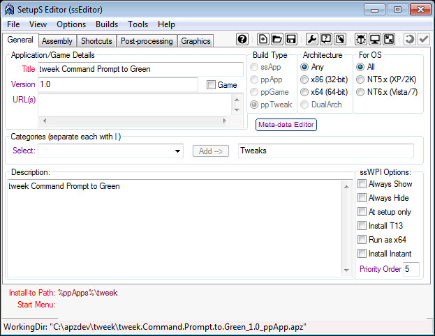
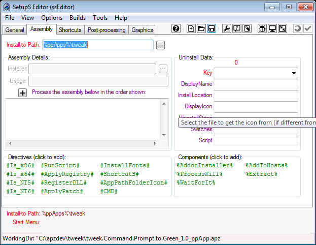
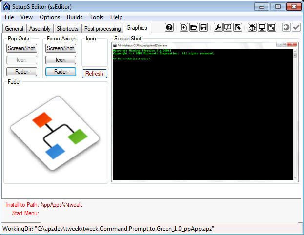
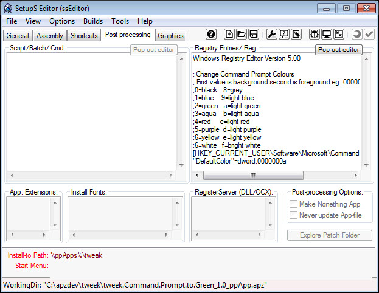
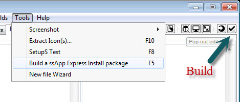

Creating a ppTweak 


Creating a ppTweak.
1. Preparation.
- Create a temporary "build" folder. Such as apzdev in the root of the drive c:\apzdev
- under this directory create a working folder of the app name.
- In this example create a folder tweek C:\apzdev\tweak
- under this folder create commandprompttogreen so the folder structure will be C:\apzdev\tweak\commandprompttogreen
- Right-click the C:\apzdev\tweak\commandprompttogreen folder and Sendto "SetupS Editor" this will open up the ssEditor

- Ensure 'ppTweek' is the "Build Type".
- Enter in the Title of the application in the Example "tweak Command Prompt to Green"
- Enter in the version of the application in the Example "v1.0"
- Enter in the URL of where the application can be located to enable users to find updates in the Example www.lastos.org
- Enter in a description of the application.
2. Assembly tab
- Check that the "Install-to Path" is correct.
- in this example %ppApps%\tweak has already been entered

3. Shortcuts tab
No Shortcuts
4. Graphics tab
- Create a screenshot
- Select a fader graphic

5. Post-processing tab
- Enter or copy the Registry Entries in the example:
Windows Registry Editor Version 5.00
; Change Command Prompt Colours
; First value is background second is foreground eg. 0000000a = light green on black
;0=black 8=grey
;1=blue 9=light blue
;2=green a=light green
;3=aqua b=light aqua
;4=red c=light red
;5=purple d=light purple
;6=yellow e=light yellow
;6=white f=bright white
[HKEY_CURRENT_USER\Software\Microsoft\Command Processor]
"DefaultColor"=dword:0000000a
- Tip: Click the "Pop-out editor" button to use notepad to edit instead.

6. Build
- IMPORTANT NOTE: This step is only available if building archive deployment packages (.apz/.pgz). Otherwise, the "Build" folder is complete for the ssWPI (folder) deployment package and no further action is required.
- Check your Build options. Click Menu "Builds" and select options for how the builds will be done.
- Finally, when ready, click "Tools, Build (F5)" -- or click the "Build" button on the Mini-Toolbar.

7. Test
- To test, simply double click on the .app or .apz file created by ssEditor.
Copyright © 2020, Vergitek Solutions
ssTek Forum: Tools for custom Operating Systems!